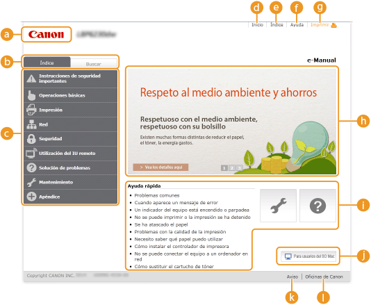
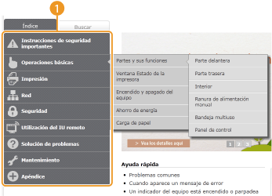
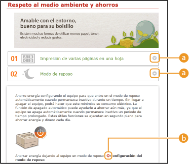
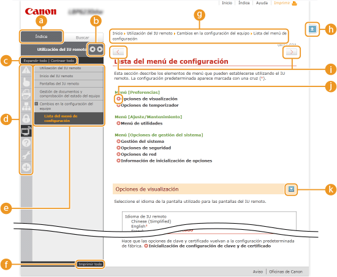
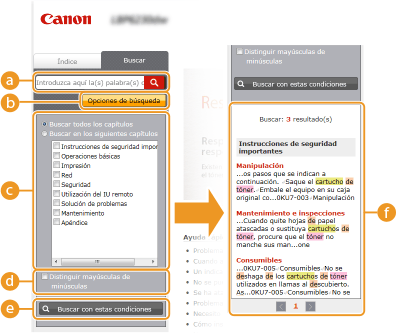
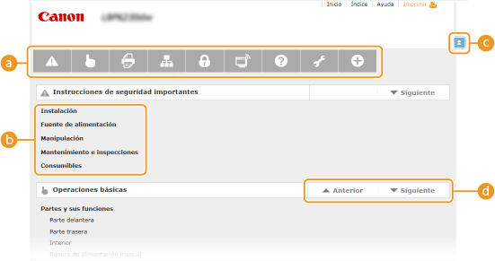

0KXF-050
El e-Manual se divide en diferentes pantallas y el contenido de cada pantalla varía.
Esta página aparece cuando se inicia el e-Manual.

 Canon
CanonHaga clic para volver a la página superior desde cualquier otra página.
 Pestaña [Índice]/pestaña [Buscar]
Pestaña [Índice]/pestaña [Buscar]Haga clic para alternar la pantalla entre las pestañas [Índice] y [Buscar].
 Índice
ÍndiceMuestra los títulos de capítulos (). Coloque el puntero del ratón sobre uno de los títulos para ver los temas de ese capítulo en la parte derecha. Haga clic en un tema para ver su página.

 [Inicio]
[Inicio]Haga clic para volver a la página superior desde cualquier otra página.
 [Índice]
[Índice]Haga clic para mostrar los títulos de todos los temas del e-Manual.
 [Ayuda]
[Ayuda]Haga clic para mostrar información sobre cómo ver el e-Manual, cómo realizar una búsqueda y otra información.
 [Imprimir]
[Imprimir]Haga clic para imprimir la página de temas que está en pantalla.
Información destacada sobre las funciones
En esta página se proporcionan diversos ejemplos prácticos sobre formas de utilizar el equipo. Haga clic en  /
/ /
/ para ir cambiando entre las pantallas de ejemplos prácticos por categoría, o haga clic en la pantalla deslizante para obtener información detallada sobre cada categoría. La pantalla deslizante puede detenerse poniendo el puntero sobre la misma. Información destacada sobre las funciones
para ir cambiando entre las pantallas de ejemplos prácticos por categoría, o haga clic en la pantalla deslizante para obtener información detallada sobre cada categoría. La pantalla deslizante puede detenerse poniendo el puntero sobre la misma. Información destacada sobre las funciones
// para ir cambiando entre las pantallas de ejemplos prácticos por categoría, o haga clic en la pantalla deslizante para obtener información detallada sobre cada categoría. La pantalla deslizante puede detenerse poniendo el puntero sobre la misma. Información destacada sobre las funciones [Ayuda rápida]/[Solución de problemas]/[Mantenimiento]
Haga clic para obtener información sobre cómo solucionar los problemas o mantener el equipo.
 [Para usuarios del SO Mac]
[Para usuarios del SO Mac]Haga clic aquí para ver las precauciones que debe tomar al utilizar el SO Mac.
 [Aviso]
[Aviso]Haga clic para visualizar información importante que debe conocer para utilizar el equipo.
[Oficinas de Canon]
Haga clic para visualizar la información de contacto de las consultas sobre el equipo.
Esta página proporciona diversos ejemplos prácticos sobre formas de utilizar el equipo.

/
Haga clic para expandir la ventana que muestra la información. Vuelva a hacer clic para contraer la ventana.

Haga clic para visualizar la página de tema correspondiente.
Las páginas de temas contienen información sobre cómo configurar y utilizar el equipo.

[Contenido]En esta pestaña se visualizan iconos de los capítulos y títulos de temas.
 /
/
La pestaña [Contenido] puede ampliarse o reducirse.
[Expandir todo]/[Contraer todo]Haga clic en [Expandir todo] para visualizar todas las subsecciones de todos los temas. Haga clic en [Contraer todo] para cerrar todas las subsecciones de todos los temas.
Iconos de los capítulosHaga clic en el icono de un capítulo para ir a la parte superior del capítulo en cuestión.
TemasMuestra los temas del capítulo seleccionado. Si "+" aparece en un tema, puede hacer clic para ver todas las subsecciones de dicho tema. Haga clic en "-" para cerrar un tema expandido.
[Imprimir todo]Todas las páginas del capítulo seleccionado se abren en una ventana aparte. Puede imprimirlas si lo necesita.
NavegaciónMuestra qué tema del capítulo se está mostrando en pantalla.
Haga clic para volver a la parte superior de la página.
/
Haga clic para visualizar el tema anterior o el siguiente.
Haga clic para saltar a la página correspondiente. Para volver a la página anterior, haga clic en el botón "Atrás" de su navegador web.

Haga clic para mostrar las descripciones detalladas ocultas. Haga clic de nuevo para cerrar las descripciones detalladas.
Esta pestaña contiene un cuadro de texto para realizar una búsqueda y encontrar la página que está buscando.

[Introduzca aquí la(s) palabra(s) clave]Introduzca una o más palabras clave y haga clic en  para visualizar los resultados de búsqueda en una lista de resultados. Puede introducir una frase para buscar páginas que contengan todas las palabras de la frase. Para encontrar la frase exacta, debe ponerla entre comillas.
para visualizar los resultados de búsqueda en una lista de resultados. Puede introducir una frase para buscar páginas que contengan todas las palabras de la frase. Para encontrar la frase exacta, debe ponerla entre comillas.
para visualizar los resultados de búsqueda en una lista de resultados. Puede introducir una frase para buscar páginas que contengan todas las palabras de la frase. Para encontrar la frase exacta, debe ponerla entre comillas. [Opciones de búsqueda]Haga clic para especificar condiciones de búsqueda como el ámbito de búsqueda o si debe distinguirse entre mayúsculas y minúsculas.
Selector del ámbito de búsquedaPuede utilizarlo para seleccionar capítulos de búsqueda concretos. Esto le permite buscar de un modo más eficaz cuando puede predecir qué capítulos contienen el tema que está buscando.
Selector de las opciones de búsquedaSeleccione la casilla de verificación para distinguir entre mayúsculas y minúsculas en la búsqueda.
[Buscar con estas condiciones] y especifique las condiciones. Cuando estén establecidas, pulse aquí para realizar la búsqueda y mostrar los resultados en la lista de [Resultado]. Lista de resultadosMuestra las páginas que contienen las palabras clave especificadas. En los resultados, localice la página que está buscando y haga clic en el título del tema de la página. Si los resultados no pueden mostrarse en una página, haga clic en  /
/ o en un número de página para mostrar los resultados en la página correspondiente.
o en un número de página para mostrar los resultados en la página correspondiente.
/ o en un número de página para mostrar los resultados en la página correspondiente. Esta página muestra los títulos de todos los temas del e-Manual.

Iconos de los capítulosHaga clic para saltar al índice del capítulo seleccionado.
Títulos de temasMuestra títulos y temas. Haga clic en un título para saltar a la página del tema correspondiente.
Haga clic para volver a la parte superior de la página.
 /
/Haga clic para ir al capítulo anterior o siguiente.